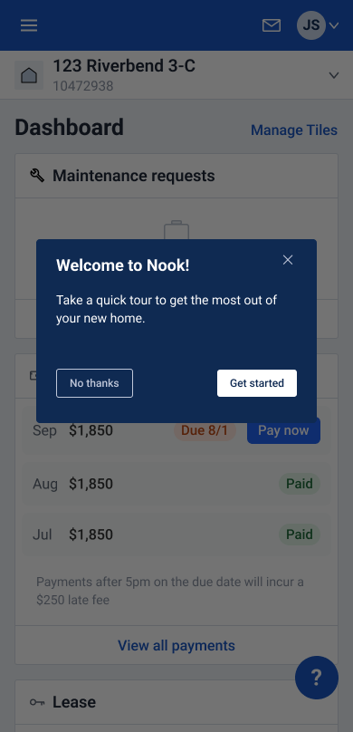
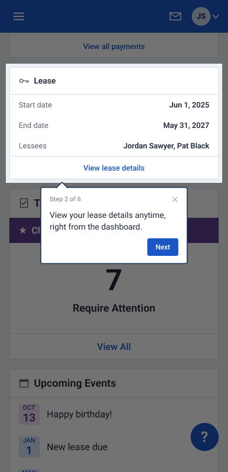
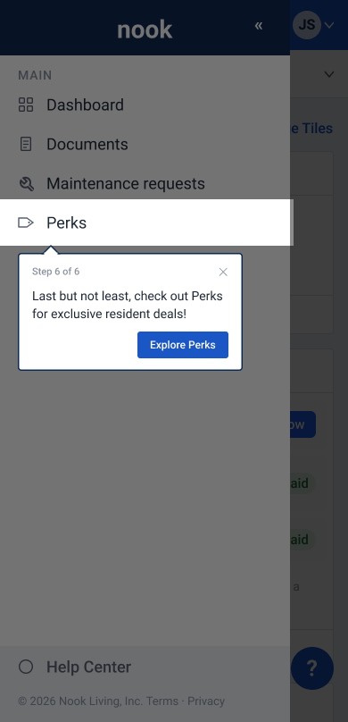
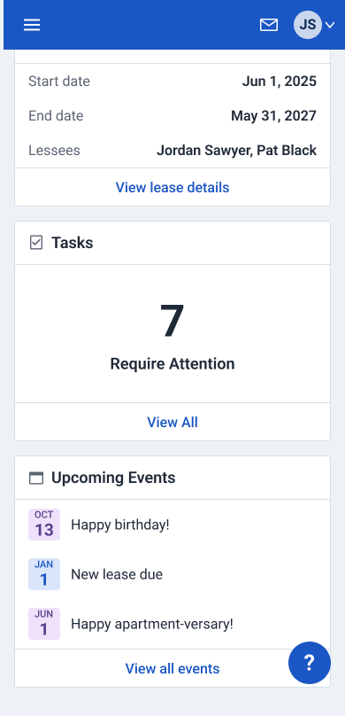
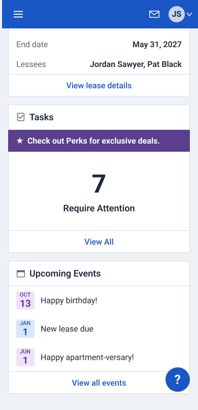
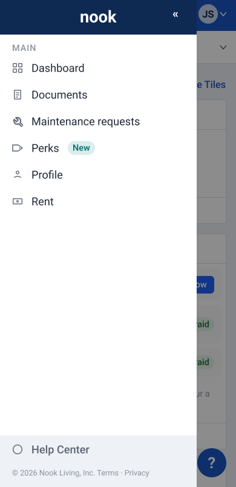
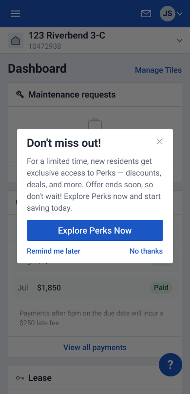
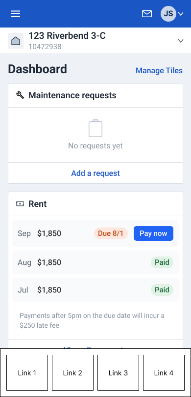
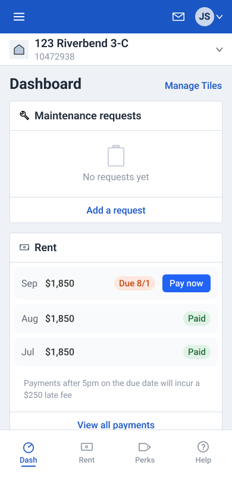
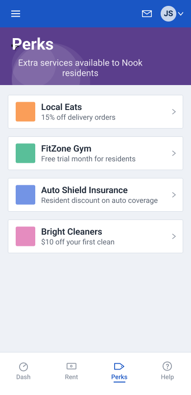

I replaced loud promotion with quiet visibility
This case study shows real, shipped work at a Fortune 500 company. The problem, process, decisions, results, and metrics are authentic. The product has been rebranded and the industry context changed to protect confidential product information.
Our app's biggest navigational update in years started with a content request for an in-app promotion.
The request came in with minimal information.
- Overview
- Add a walkthrough for new users. As the last step, point them to Perks.
- Business goal
- Increase new user awareness of Perks
- What is the value to the company, in dollars?
- We make $20 off of every user who visits Perks. But many users don't know it exists, especially new users. We need to make sure that every new user is aware of Perks.
Here's what they were asking for.



Here's the thing. We'd had a walkthrough before, so we knew exactly how this would go. About two-thirds of users decided "not for me" and never started. Of those who started, about two-thirds dropped off after the first step. Only 8% saw the final step.
2 out of every 3 people opted out
2 out of every 3 people dropped off
Two drop-offs did the damage: opting out, then leaving after step 1.
8% is promotional reach, not engagement. We didn't know how many of that 8% would click a Perks promotion.
We'd tried plenty of ways to promote Perks
Perks had been a business priority since it launched. But there was no target for what "enough" adoption looked like. Any lift was worth keeping, and the business wanted more.
|
Make it a Task
In production
 See full details See details: Make it a Task |
Add a banner to Tasks
In production · later discontinued
 See full details See details: Add a banner to Tasks |
Add a "New" badge
Used at Perks launch
 See full details See details: Add a "New" badge |
Show a pop-up at login
Previously used
 See full details See details: Show a pop-up at login |
|
|---|---|---|---|---|
| Visible | ×No | ×No | ✓Yes | ✓Yes |
| Persistent | ✓Yes | ✓Yes | ✓Yes | ×No |
| Non-blocking | ✓Yes | ✓Yes | ✓Yes | ×No |
| Matches expectations | ×No | ✓Yes | ×No | ×No |
Make it a Task
In production
Pros
- Persistent until users visited Perks
- Non-blocking
Cons
- Poor visibility. Tasks was below the fold, and the Dashboard showed only the number of open tasks.
- Unknown impact. The Task and menu item had always been live; together, the existing experience produced an 18% first-month visit rate.
- Devalued the pattern. Tasks were intended for things users actually needed to do.
- Risked trust. Users complained about being tricked into opening an ad disguised as a Task.
Add a banner to Tasks
In production · later discontinued
Pros
- Persistent
- Non-blocking
- Moderate impact. New-user visits increased from 18% to 23%.
Cons
- Poor visibility. It still lived behind a below-the-fold Tasks tile.
- Added noise to the Dashboard.
Add a "New" badge
Used at Perks launch
Pros
- High impact. Users who saw the treatment were 35% more likely to visit than the control.
- Persistent until action
- Non-blocking
- Prompted action by creating a strong drive to clear the notification indicator.
Cons
- Different audience. The result came from an existing-user launch; we didn't know whether it would work the same way when the entire product was new.
- Perks wasn't new anymore.
- Devalued the pattern. Promotional use weakened the meaning of "New" when we actually needed to communicate new functionality.
- Risked trust. A false "New" signal teaches users that product cues may really be ads.
Show a pop-up at login
Previously used
Pros
- Maximum visibility
- High immediate impact. 24% of users who saw it visited Perks.
Cons
- Blocking. It interrupted users before they could do what they'd logged in to do.
- One-time. It produced an immediate bump, not sustained visibility.
- Lower-quality traffic. Visits increased, but interaction with Perks decreased.
- Risked trust. Promotional interruptions made it harder to know when an interruption was actually important.
We don't need to hijack a pattern to get attention
A Task should still mean something users need to do. "New" should still mean new. An interruption should still signal something worth interrupting them for.
We could make Perks more prominent without asking another pattern to mean something it didn't.
We needed a different approach
I looked back at the promotions we'd run, and defined requirements for a real solution.
- Visible
- Persistent
- Non-blocking
- Aligned to user expectations
The prior promotions either demanded attention or waited for users to stumble across them. I wanted Perks to have a consistent, persistently visible place in the app's navigation, without interrupting what users came to do.
What if Perks had a permanent place in the app's navigation?

The experiment
Changing mobile navigation is no small feat. We're talking standing up a new initiative; getting funding and roadmap priority; assigning a PO, dev team, and other resources; then starting pre-SDLC.
The business certainly didn't have that kind of patience to pursue an idea proposed by UX. But I had an even better idea about how we could test this for free.
Pendo was already layered over the product, so I asked our Pendo builder a slightly weird question: could we put four linked images across the bottom of every screen and make them look and behave like a rudimentary bottom nav?
His response:
"Uhhh, maybe??"
🤔
"Theoretically, yes. Let me see if I can build it."
He could.
So I pulled in just enough expertise to make it a responsible experiment.
Our senior product strategist talked through the idea, to make sure it wasn't something we'd all come to regret testing. Together, we chose four screens that the nav bar would link to.
Our principal visual designer styled the faux nav bar, to make it look native to the product.
A UX researcher and systems data analyst refined the audience and success metrics.
A Pendo builder made the whole thing work.
After I started the conversation, the team ran with it.


We tested it live
Pendo randomly split eligible new users 50/50 between a control group and a test group. We measured activity on both groups simultaneously, for 30 days after first login.
The control group had the existing experience: Perks was available through the menu and as a Task. The test group got that, plus the faux bottom nav on every screen.
Our primary KPI was whether users visited Perks.
Persistent visibility drove a 3.4× lift
The results were compelling.
18% of users visited Perks when they saw the normal experience.
61% visited when we added the bottom nav.
Our simple A/B test showed that we didn't need interruptions, badges, and promotional UI to drive attention. By making Perks persistently visible in a place that made sense in the app's IA, we could get a much larger lift.
The band-aid requests stopped
The test changed the conversation. Instead of finding another way to promote Perks, we could solve the underlying problem with persistent mobile navigation.
The business turned their attention to making that a reality, and stopped asking for one-off promotional treatments. And they succeeded. An initiative to create a mobile bottom nav was approved for the roadmap, and is on its way to development.